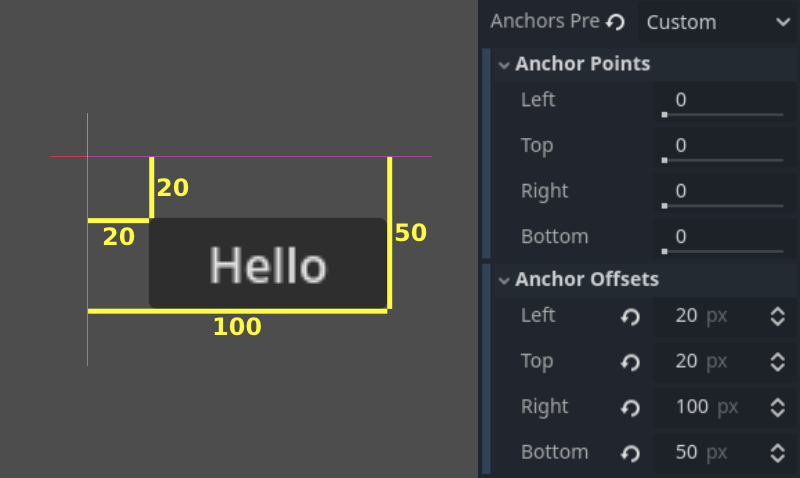
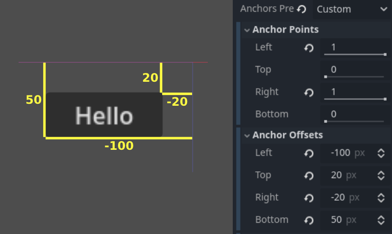

Size and anchors
If a game was always going to be run on the same device and at the same resolution, positioning controls would be a simple matter of setting the position and size of each one of them. Unfortunately, that is rarely the case.
While some configurations may be more common than others, devices like phones, tablets and portable gaming consoles can vary greatly. Therefore, we often have to account for different aspect ratios, resolutions and user scaling.
There are several ways to account for this, but for now, let's just imagine that the screen resolution has changed and the controls need to be re-positioned. Some will need to follow the bottom of the screen, others the top of the screen, or maybe the right or left margins.

This is done by editing the anchor offsets of controls, which behave similarly to a margin. To access these settings, you will first need to select the Custom anchor preset.
Each control has four anchor offsets: left, right, bottom, and top, which correspond to the respective edges of the control. By default, all of them represent a distance in pixels relative to the top-left corner of the parent control or (in case there is no parent control) the viewport.

So to make the control wider you can make the right offset larger and/or make the left offset smaller. This lets you set the exact placement and shape of the control.
The anchor properties adjust where the offsets are relative to.
Each offset has an individual anchor that can be adjusted from the
beginning to the end of the parent. So the vertical (top, bottom) anchors
adjust from 0.0 (top of parent) to 1.0 (bottom of parent) with 0.5 being
the center, and the control offsets will be placed relative to that
point. The horizontal (left, right) anchors similarly adjust from left to
right of the parent.
Note that when you wish the edge of a control to be above or left of the anchor point, you must change the offset value to be negative.
For example: when horizontal anchors are changed to 1.0, the offset values
become relative to the top-right corner of the parent control or viewport.

Adjusting the two horizontal or the two vertical anchors to different values will make the control change size when the parent control does. Here, the control is set to anchor its bottom-right corner to the parent's bottom-right, while the top-left control offsets are still anchored to the top-left of the parent, so when re-sizing the parent, the control will always cover it, leaving a 20 pixel offset:

Centering a control
To center a control in its parent, set its anchors to 0.5 and each offset
to half of its relevant dimension. For example, the code below shows how
a TextureRect can be centered in its parent:
var rect = TextureRect.new()
rect.texture = load("res://icon.svg")
rect.anchor_left = 0.5
rect.anchor_right = 0.5
rect.anchor_top = 0.5
rect.anchor_bottom = 0.5
var texture_size = rect.texture.get_size()
rect.offset_left = -texture_size.x / 2
rect.offset_right = texture_size.x / 2
rect.offset_top = -texture_size.y / 2
rect.offset_bottom = texture_size.y / 2
add_child(rect)
var rect = new TextureRect();
rect.Texture = ResourceLoader.Load<Texture>("res://icon.svg");
rect.AnchorLeft = 0.5f;
rect.AnchorRight = 0.5f;
rect.AnchorTop = 0.5f;
rect.AnchorBottom = 0.5f;
var textureSize = rect.Texture.GetSize();
rect.OffsetLeft = -textureSize.X / 2;
rect.OffsetRight = textureSize.X / 2;
rect.OffsetTop = -textureSize.Y / 2;
rect.OffsetBottom = textureSize.Y / 2;
AddChild(rect);
Setting each anchor to 0.5 moves the reference point for the offsets to
the center of its parent. From there, we set negative offsets so that
the control gets its natural size.
Anchor Presets
Instead of manually adjusting the offset and anchor values, you can use the toolbar's Anchor menu, above the viewport. Besides centering, it gives you many options to align and resize control nodes.